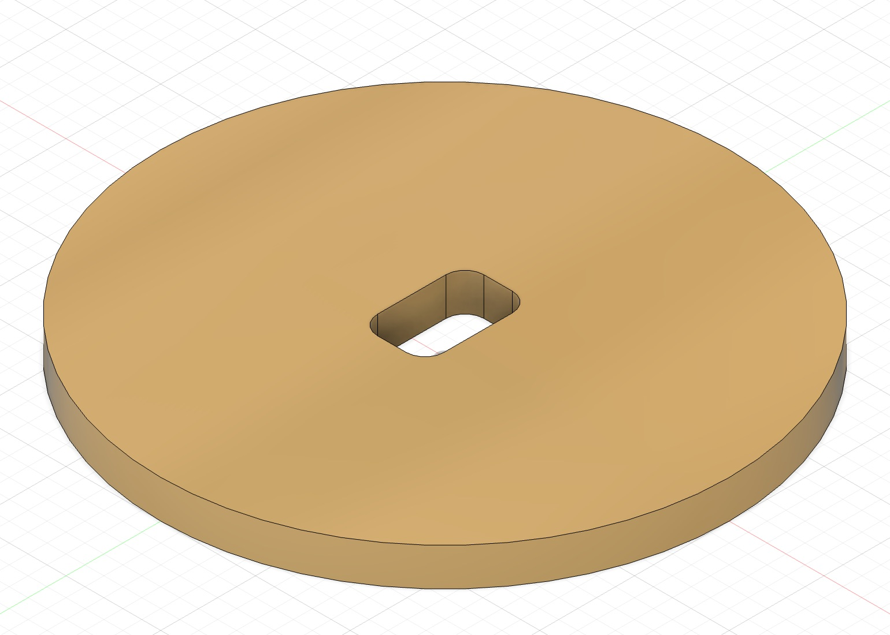
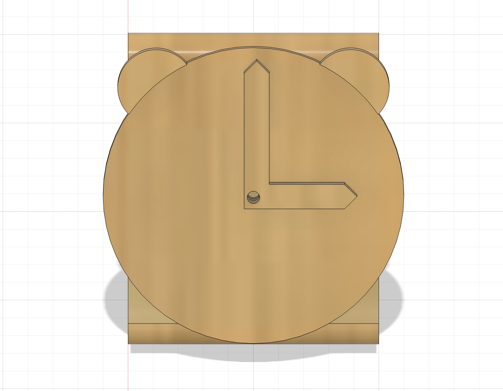
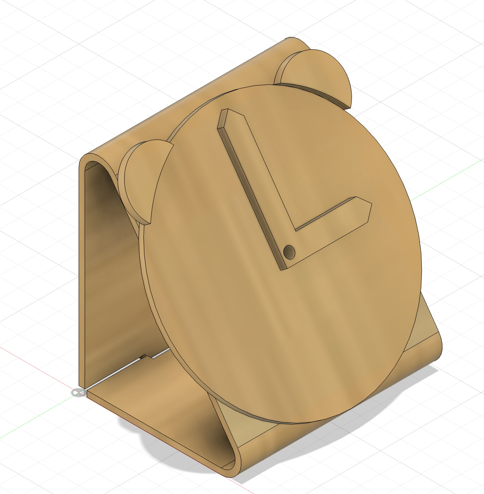

<div class="textcontainer">
<p class="margin"> </p>
<h3>Week 2.1: Fabrication and Circuitry</h3>
<h4>Kinetic Sculpture</h4>
In order to capture the caos life of a student, I created a Wacky Clock kinetic sculpture. The clock represents what time management feels like for students that have to constantly juggle assignment deadlines. In particular, the clock is comprised of a disoriented number scheme, two time arms, a rotar mechnanism to connect the DC motor with the clock, as well as a clock holder with a live joint. Furthermore, a DC motor is used to move the mechanisms to create kinetic movement.
<br></br>
During the learning process, I encountered numerous problems that required solving. First, the main problem was translating a 3D model in fusion into 2D components that required assembly. Since I could only print the face of the clock, I had to create the living-joint holder afterwards to pin all of the components (i.e., the clock arms, the alarms, and the face itself). After modeling the parts, the next challenge was finding a mechanism to turn the components to create kinetic movement. I found that an M5 screw and lock was the best fit for the diameter of the hole in each component. However, after reaching this step, it was discovered that the DC motor wasn't compatible with the M5 screw—even with a lock attached to the end. Therefore, even though the components were able to move, there was no way to power them via DC motor. As a result, I went back into fusion, measured the gearbox adapter, and created the appropriate hole adaptor with fillets for the motor to fit into.
<p class="margin"> </p>
<div class="center-colum">

<br></br>
<p class="margin"> </p>
<div class="center-colum">


<br></br>
<video controls>
<source src="demo.mp4" type="video/mp4">
</video>
</div>